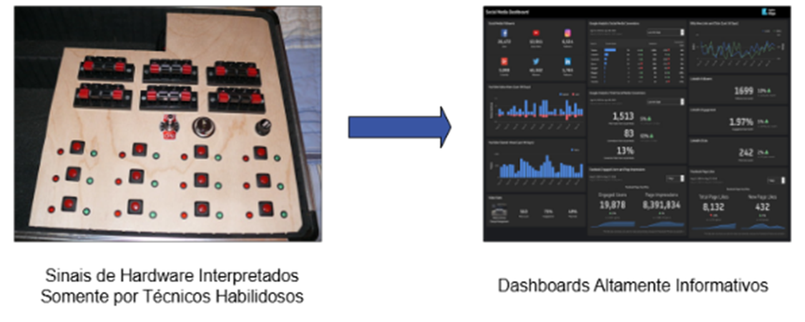
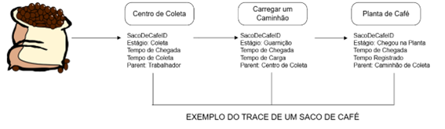
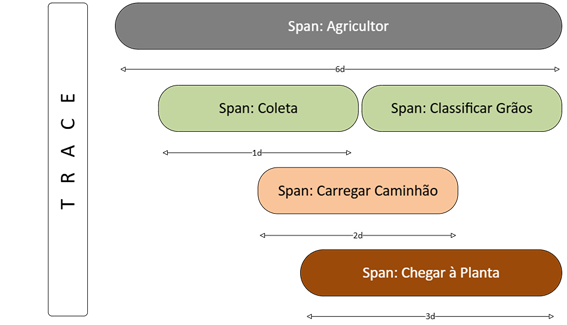
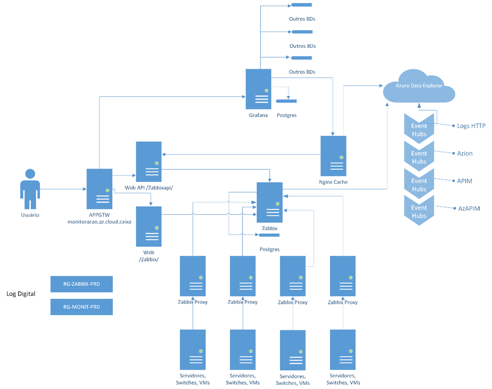
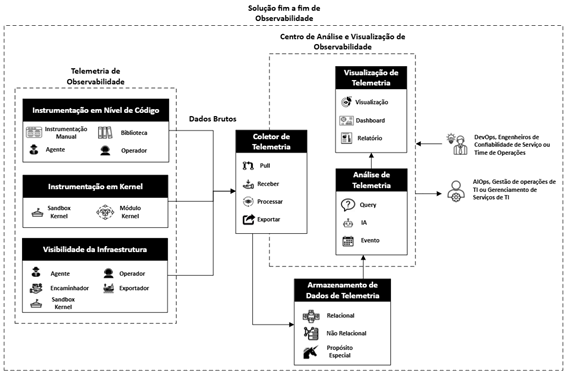
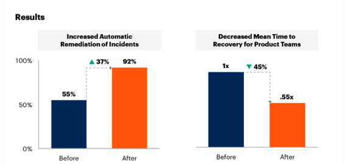

Observabilidade
Observabilidade na Evolução de Sistemas
A crescente complexidade dos sistemas de tecnologia da informação, impulsionada pela transformação digital, exige novas abordagens para garantir a saúde e o desempenho das aplicações. Nesse contexto, a observabilidade emerge como um paradigma conceitual que vai além do monitoramento tradicional, oferecendo uma visão integrada e proativa dos sistemas. Enquanto o monitoramento se limita à coleta de métricas pré-definidas por meio de ferramentas externas, a observabilidade propõe que os sistemas sejam projetados para gerar dados que permitam inferir seu estado internamente a partir de saídas externas. Essa capacidade, originalmente definida pelo engenheiro Rudolf E. Kálmán em 1960 como a medida de quão bem os estados internos de um sistema podem ser compreendidos, torna-se essencial em ambientes distribuídos e dinâmicos. Historicamente, as práticas de monitoramento evoluíram de soluções simples, como comandos vmstat e syslogs, para ferramentas mais avançadas que gerenciam o desempenho de aplicativos e monitoram/analisam dados gerados. No entanto, mesmo com esses avanços, persistem desafios, como a fragmentação da análise por tecnologia e a incapacidade de correlacionar problemas entre componentes interdependentes.

A observabilidade não se resume a uma ferramenta ou tecnologia, mas a uma capacidade sistêmica que integra arquitetura, práticas de desenvolvimento e gestão de dados. Seu principal diferencial é a capacidade de antecipar problemas e possibilitar a automação de correções, um conceito conhecido como autocura. Isso é particularmente relevante em ambientes complexos, nos quais a intervenção humana pode ser lenta ou insuficiente para evitar impactos nos usuários. Além disso, ao contrário do monitoramento tradicional, que focava em métricas técnicas isoladas, a observabilidade incorpora análises de comportamento do usuário e insights acionáveis, essenciais para a tomada de decisão em tempo real. Em um contexto em que a velocidade e a confiabilidade são diferenciais competitivos, a observabilidade não é um luxo, mas uma necessidade estratégica. Seu sucesso depende da combinação entre tecnologia avançada e uma mentalidade centrada no cliente, capaz de transformar desafios complexos em oportunidades de inovação e resiliência.
Fundamentos da Observabilidade
A observabilidade é construída sobre três pilares fundamentais: logs, métricas e traces (rastros), que, juntos, formam a base da telemetria de dados em sistemas modernos. Embora não seja obrigatório implementar os três simultaneamente, a combinação desses elementos oferece uma visão abrangente e detalhada do estado e do desempenho das aplicações, permitindo identificar problemas, antecipar falhas e otimizar processos. Os logs são registros em formato de texto que documentam eventos em um sistema, variando de estruturados a não estruturados. Eles são essenciais para diagnosticar erros, monitorar a saúde de aplicações e infraestrutura, e identificar os padrões ou anomalias. Por exemplo, logs de empresas de transporte podem revelar atrasos em rotas ou ineficiências logísticas. No entanto o volume e a granularidade dos logs exigem estratégias de armazenamento e processamento eficientes, como agregação ou arquivamento de dados antigos, além do uso de ferramentas de mercado analíticas.
Exemplo de mensagem de log bruta:
Sep 20 08:01:13: <10.0.0.10> %LINEPROTO-5-UPDOWN: Line protocol on Interface GigabitEthernet0/5, changed to state to up
Exemplo de mensagem de log estruturada:
{
“source_ip”: “10.0.0.10”,
“severity”: “5”,
“facility”: “LINEPROTO”,
“facility_process”: “UPDOWN”,
“message”: “Line protocol on Interface GigabitEthernet0/5, changed to state to up”
}
As métricas, por sua vez, são valores numéricos que medem aspectos específicos de um sistema, organizados por dimensões como região, hardware ou identificador de máquina. Sua estrutura padronizada facilita o armazenamento, a análise e a geração de alertas baseados em limites pré-definidos. Métricas como o volume de café processado por uma máquina ou seu estado operacional permitem monitorar tendências ao longo do tempo, identificar gargalos e avaliar a capacidade do sistema. Ferramentas de mercado são comumente usadas para coletar e processar essas métricas, que são ideais para criar gráficos de séries temporais e analisar o desempenho de forma contínua.
Formato de métrica do Prometheus
-
Nome da métrica: interface_out_octets - Essa métrica representa o número de octetos (bytes) que foram enviados pela interface de rede. É uma métrica comum em monitoramento de tráfego de rede.
-
Labels (rótulos): Esses rótulos ajudam a identificar de onde vem a métrica: device="spine1" → o nome do equipamento de rede (neste caso, um switch ou roteador chamado "spine1"). interface="et-0/0/4" → a interface específica do dispositivo (porta física ou lógica).
-
Valor: 70077 - Esse é o valor da métrica naquele momento: 70077 octetos enviados pela interface et-0/0/4 do dispositivo spine1.
-
Timestamp: @1675634055 - Esse número é um timestamp Unix, que representa o momento em que essa métrica foi coletada. 1675634055 corresponde a 05 de fevereiro de 2023, às 11:14:15 UTC.
Já os traces são cruciais para rastrear o fluxo de requisições em sistemas distribuídos, identificando onde e por que ocorrem problemas. Ao contrário dos logs, que registram eventos isolados, os traces conectam interações entre serviços por meio de identificadores únicos, permitindo mapear a jornada de uma transação desde sua origem até o destino. No entanto, sua implementação é desafiadora, especialmente em sistemas legados ou arquiteturas híbridas, onde

a falta de padronização pode resultar na perda de rastreabilidade. Ferramentas de APM (Application Performance Monitoring) e padrões de observabilidade – como o OpenTelemetry – facilitam a instrumentação de traces mas exigem coordenação entre equipes e adaptação de códigos ou infraestrutura.
Uma transação completa é chamada de trace, operações singulares que formam uma transação são chamadas de span, então é seguro dizer que um ou mais spans formam um trace.

Além desses três pilares, a observabilidade também pode se utilizar de service views e CMDBs (Configuration Management Databases). As service views decompõem aplicações em seus componentes e dependências, oferecendo mapas que variam desde a experiência do usuário até a saúde de sistemas individuais. Esses mapas dão entendimento do fluxo de dados e o impacto de falhas em diferentes níveis, como a jornada do cliente ou a saúde de servidores em um ambiente de TI. O CMDB, por sua vez, é um repositório central que armazena metadados sobre itens de configuração (CIs) e seus relacionamentos. Ele permite identificar dependências entre componentes, priorizar a resolução de incidentes e automatizar processos, como atualizações de software, além de ser uma alternativa para a construção de mapas de serviço precisos e para a gestão eficiente de incidentes. Por fim os KPIs (Key Performance Indicators) são métricas quantificáveis que avaliam a saúde e o desempenho de sistemas e serviços. Eles podem variar desde indicadores técnicos, como latência e taxa de erros, até métricas de negócio, como satisfação do cliente ou taxa de conversão. É importante buscar definir KPIs universais que ajudam a monitorar a saúde agregada de serviços, independentemente da infraestrutura subjacente.
Desafios na Implementação
A implementação da observabilidade em organizações modernas representa muito mais do que a simples adoção de novas ferramentas tecnológicas, configurando-se como um processo de transformação profunda que abrange desde a infraestrutura até a cultura organizacional. Embora seus benefícios – como maior estabilidade dos sistemas, confiabilidade aprimorada e automação inteligente – sejam inegáveis, a jornada para alcançá-los é repleta de desafios que exigem uma abordagem estratégica e integrada. Um dos principais obstáculos reside na complexidade inerente às arquiteturas contemporâneas, que combinam ambientes on-premises, nuvens públicas e privadas, microsserviços e containers. Essa diversidade gera um volume massivo de dados em alta velocidade, tornando difícil não apenas a coleta e o armazenamento, mas também a correlação desses dados para extrair insights acionáveis em tempo real. Sem uma estratégia clara para definir quais dados são relevantes, como serão armazenados e por quanto tempo, as organizações correm o risco de se afogar em informações irrelevantes, perdendo a capacidade de identificar problemas críticos.
Além disso, a cultura organizacional frequentemente se torna uma barreira significativa. A observabilidade não pode ser tratada como um projeto isolado ou ume mera exigência de conformidade; ela demanda uma mudança de mentalidade, onde equipes de desenvolvimento, operações e gestão estejam verdadeiramente engajadas em uma cultura de melhoria contínua e tomada de decisão baseada em dados. A resistência à mudança, a falta de habilidades especializadas e a tendência de enxergar a observabilidade como um “acréscimo” – em vez de um componente essencial do ciclo de vida do desenvolvimento – são desafios que precisam ser superados. Para isso, é fundamental investir em treinamentos, promover a colaboração entre as equipes e demonstrar, por meio de casos de sucesso internos, o valor tangível que a observabilidade pode trazer para o dia a dia operacional.
Outro ponto crítico é a necessidade de apoio executivo. Sem o comprometimento da alta liderança, a observabilidade dificilmente receberá os recursos e a priorização necessários para ser implementada com sucesso. Os executivos devem atuar como patrocinadores, alinhando a iniciativa aos objetivos estratégicos do negócio e garantindo que as equipes tenham o tempo e o espaço necessários para experimentar, aprender e aprimorar as soluções. Sem esse apoio, a observabilidade corre o risco de ser vista como um custo adicional, em vez de um investimento estratégico que pode impulsionar a inovação e a criatividade.
A proliferação descontrolada de ferramentas também representa um desafio significativo. Muitas organizações acumulam dezenas de soluções de monitoramento, muitas vezes sobrepostas ou subutilizadas, o que gera custos desnecessários e fragmentação dos dados. Essa situação não apenas dificulta a obtenção de uma visão unificada dos sistemas, mas também sobrecarrega as equipes com a manutenção de múltiplas plataformas.
A racionalização dessas ferramentas, com foco na integração e padronização, é um passo essencial para reduzir a complexidade operacional e melhorar a eficiência.
A escolha deve priorizar soluções que sejam compatíveis com a stack tecnológica existente e capazes de compartilhar dados de forma fluida, evitando a criação de “ilhas de informação” que limitam a visibilidade e a colaboração.
Por fim, medir o sucesso da observabilidade é um aspecto crucial para garantir seu apoio contínuo e justificar os investimentos realizados. Métricas tradicionais, como o tempo médio de detecção (MTTD) e o tempo médio de recuperação (MTTR), embora importantes, não são suficientes para capturar todo o valor gerado pela iniciativa. É necessário também avaliar o impacto na experiência do usuário, a redução de alertas falsos, a adoção de ferramentas pelas equipes e a capacidade de automação e autocura dos sistemas. Demonstrar esses resultados de maneira clara e contínua não apenas fortalece o caso de negócio para a observabilidade, mas também ajuda a construir uma cultura de melhoria contínua, onde os dados são usados para impulsionar decisões estratégias.
Coleta de Dados para Provisionamento
A observabilidade, como motor essencial de gestão de TI, é fundamentalmente impulsionada pela coleta sistemática de dados – logs, métricas e traces – que transformam informações brutas em insights acionáveis e permitem decisões proativas. Para uma implementação eficaz, essa coleta de dados deve abranger três camadas distintas e interdependentes: infraestrutura, aplicação e serviço de negócio.
Na camada de infraestrutura, o foco é a monitorização da saúde e desempenho de componentes como servidores, bases de dados e contêineres, através de métricas de CPU, memória e rede. Essa coleta, frequentemente realizada via agentes ou protocolos específicos, é crucial para identificar falhas, estabelecer alertas proativos com limiares adaptativos e auxiliar no planejamento de capacidade, permitindo isolar rapidamente problemas ou descartar questões relacionadas à infraestrutura.
A camada de aplicação se concentra na saúde geral dos serviços e no cumprimento de SLAs/SLOs. Os dados são obtidos de logs detalhados, de plataformas de APM – que instrumentam o código para rastrear transações ponta a ponta, identificar gargalos e criar baselines de comportamento – e de telemetria, que oferece uma medição consciente de dados operacionais, muitas vezes integrada com AIOps para detecção automática de anomalias e melhoria da experiência do usuário.
A terceira camada, de serviço de negócio, eleva a observabilidade ao adicionar o contexto empresarial. Ela monitora indicadores-chave de desempenho (KPIs) como volume de vendas e taxas de conversão, além da experiência do cliente, por meio de abordagens como Digital Experience Monitoring (DEM), Synthetic Transaction Monitoring (STM) e Real User Monitoring (RUM). Ferramentas como o OpenTelemetry padronizam o tracing da jornada do cliente ao utilizar trace-ids para correlacionar todas as funções de um serviço, mesmo em arquiteturas distribuídas e terceirizadas.
Essa estrutura em camadas, que aumenta em complexidade e abrangência, é vital para construir um sistema de observabilidade maduro, garantindo que os dados não apenas mostrem o que estão acontecendo, mas também ofereçam a visibilidade necessária para o impacto no negócio e a proatividade operacional.
Materializando a Observabilidade
A observabilidade, consolidada na gestão de TI, materializa-se em dashboards, alertas e incidentes, resultados essenciais que transformam dados brutos em inteligência acionável e proativa.
Os dashboards funcionam como representações visuais coletivas do ambiente de TI, exibindo desempenho de aplicações, métricas de negócio e experiência do cliente. Eles permitem analisar, rastrear e visualizar dados de forma eficaz. Podem ser estáticos ou interativos, oferecendo a funcionalidade de “drill down” para aprofundamento em métricas específicas. O valor de um dashboard depende diretamente da qualidade dos dados (logs, métricas, traces) e da capacidade do desenvolvedor em entender as necessidades do cliente, apresentando informações relevantes para o público específico. As equipes de aplicação são as principais responsáveis pela criação e manutenção dos dashboards, com apoio da equipe de observabilidade, sendo crucial a revisão e otimização periódica para evitar obsolescência. Importante notar que dashboards podem ser retidos e reutilizados de setups de monitoramento tradicionais ao migrar para a observabilidade.
No entanto, dashboards são ferramentas passivas, exigindo monitoramento humano constante. É aqui que alertas e incidentes se tornam cruciais, notificando proativamente as equipes sobre problemas para que ações corretivas sejam tomadas antes que escalem. Um evento é a causa que ocorre no ambiente de TI. Um alerta é uma mensagem informativa ou proativa indica uma anomalia. Um incidente, por sua vez, sinaliza uma interrupção não planejada, seguindo processos ITIL. As ferramentas de observabilidade geram esses eventos que são convertidos em alertas ou incidentes por ferramentas de Gerenciamento de Serviços de TI (ITSM), com base na criticidade e impacto. A definição de alertas deve cobrir qualquer evento que requeira atenção, tanto técnico (erros, queda de throughput) quanto de negócio (queda nas vendas esperadas), utilizando KPIs como base. A frequência e os limiares dos alertas devem ser cuidadosamente definidos em conjunto com os especialistas da aplicação, considerando a tolerância do sistema e o tempo de resolução, evitando o excesso de notificação que consomem recursos e são ineficazes.
A gestão de um grande volume de alertas e incidentes é um desafio. Para mitigar o “ruído”, empregam-se estratégias como a correlação de eventos ITSM, que identifica relacionamentos entre alertas para priorizar aqueles com maior impacto nos serviços. A supressão e estrangulamento de alertas/incidentes reduzem disparos repetitivos, usando regras baseadas em tempo, tipo ou fonte, e podem ser vinculadas a registros de gerenciamento de mudanças. Além disso, a revisão e otimização regulares por parte das equipes operacionais são fundamentais para ajustar limiares, cobrir pontos cegos e calibrar modelos de machine learning para alertas preditivos.
Arquitetura de Monitoramento AS-IS

A arquitetura atual parte de um gateway central, o APPGTW, – monitoracao.az.cloud.caixa – que recebe todas as requisições de usuários e as distribui de forma inteligente entre três componentes críticos: o Grafana, responsável pela visualização de métricas; a API Web, – /ZabbixAPI/ – dedicada à automação; e a interface Web – /Zabbix/ – voltada ao controle humano. Essa convergência inicial assegura um ponto único de entrada para políticas de segurança e otimização de tráfego, estabelecendo o alicerce da plataforma.
No fluxo interno o Grafana consulta três bancos de dados especializados em séries temporais, um PostgreSQL e um cache Nginx, combinando flexibilidade para consultas ad-hoc com baixa latência em leituras recorrentes. O cache Nginx, por sua vez, não só acelera a interface do Grafana como encaminha eventos de desempenho para o Azure Data Explorer (ADX). Paralelamente, a API Web e a interface Web direcionam solicitações ao Zabbix, que é o verdadeiro núcleo da monitoração de infraestrutura. Embora o Zabbix não tenha sido originalmente projetado para lidar com telemetria visual, alertas e incidentes, ele cumpre esse papel, sendo responsável por gerar imagens de estado, disparar alertas e registrar eventos críticos. Em conjunto com o Prometheus, que pode atuar como coletor complementar, o Zabbix forma a espinha dorsal do monitoramento de infraestrutura.
A coleta de dados é distribuída por meio de quatro servidores ou VMs que enviam informações a quatro proxies Zabbix distintos. Esses proxies, por sua vez, encaminham os dados ao Zabbix, essa separação de responsabilidades e a adoção de proxies Zabbix garantem modularidade e resiliência: cada segmento pode falhar ou ser escalado de forma independente, sem comprometer o sistema como um todo. A partir do Zabbix, os dados são armazenados em um banco PostgreSQL dedicado e, também, enviados ao ADX que assume a responsabilidade pela análise da camada de aplicação. Por ser um banco de dados semelhante ao não relacional, o ADX é ideal para processar grandes volumes de logs, eventos e métricas de forma flexível e performática.
Além disso, o ADX recebe dados de múltiplas fontes externas, como Event Hubs de AzAPIM, APIM, Azion e logs HTTP, consolidando informações que vão além da infraestrutura e abrangem o comportamento das aplicações. Essa separação de responsabilidade entre Zabbix e ADX é estratégica, pois permite que cada ferramenta opere dentro da sua especialidade, sem sobrecarregar ou comprometer a eficiência do sistema.
A crescente complexidade dos sistemas de tecnologia da informação exige uma transformação profunda na forma de montagem e gerenciamento de ambientes digitais. A arquitetura AS-IS baseada exclusivamente em monitoramento, embora tenha sido eficaz em contextos menos dinâmicos, mostra-se insuficiente diante das demandas atuais. Nesse cenário, torna-se imperativo migrar para uma arquitetura de observabilidade proativa, capaz de antecipar falhas, correlacionar eventos complexos e promover ações preventivas.
O monitoramento atual limita-se a detectar falhas e emitir alertas, sem oferecer contexto suficiente para entender a causa dos problemas. Essa abordagem reativa compromete a agilidade das equipes e aumenta o tempo de resposta a incidentes. Em contraste, a observabilidade — especialmente em seus níveis mais avançados — permite uma análise mais profunda do comportamento dos sistemas, utilizando métricas, logs e rastreamentos para identificar padrões e inferir causas. A evolução para a observabilidade causal, por exemplo, já representa um avanço significativo ao correlacionar eventos e mudanças na topologia da infraestrutura, reduzindo o tempo de diagnóstico.
No entanto, é com a adoção da observabilidade proativa, apoiada por tecnologias de AIOps (Operações Inteligentes Assistidas por IA), que se alcança o verdadeiro potencial da gestão moderna de sistemas. Ao aplicar inteligência artificial e machine learning sobre grandes volumes de dados, essa arquitetura TO-BE permite detectar anomalias precocemente, prever falhas e automatizar respostas. Isso não apenas melhora a confiabilidade dos sistemas, mas também libera as equipes para focarem em inovação, em vez de apenas resolução de problemas.
Arquitetura de Observabilidade TO-BE

Este diagrama de arquitetura é dividido em dois grupos lógicos, cada um cercado por uma linha tracejada separada. O primeiro grupo representa a geração de telemetria. A telemetria a partir de pilhas de aplicativos abrange tanto software quanto infraestrutura.
O segundo grupo representa a tecnologia para a coleta e compreensão de dados de telemetria. Os fluxos de dados entre o grupo Telemetria de Observabilidade e o Coletor de Telemetria representam dados brutos coletados de fontes de telemetria. Os fluxos de dados entre recursos/componentes dentro do grupo Solução de Observabilidade representam dados de telemetria processados. O processamento de dados de telemetria pode ocorrer em um ou mais pontos ao longo do caminho do fluxo de dados, começando com o Coletor de Telemetria.
As caixas com tampa preta representam os recursos fundamentais necessários para a observabilidade de software. Cada capacidade possui diversos subcomponentes que oferecem suporte à capacidade/componente abrangente.
Os dois endpoints representam usuários e sistemas, que interagem ou recebem dados gerados por meio da observabilidade de software. O fluxo de dados entre o grupo de Soluções de Observabilidade e as equipes de DevOps, SRE ou operação representa o entendimento obtido a partir das interações do usuário com os dados de telemetria. O fluxo de dados entre o grupo de Soluções de Observabilidade e AIOps, gerenciamento de operações de TI (ITOM) ou gerenciamento de serviços de TI (ITSM) representa eventos detectados e enviados a esses endpoints.
A instrumentação a nível de código gera telemetria sobre o estado ou performance de uma aplicação. O código pode ser instrumentalizado manualmente através do uso de um Software Development Kit (SDK) com uma API ou agente, ou instrumentalizado automaticamente através de bibliotecas de software, agentes ou operadores.
A instrumentação do kernel fornece visibilidade de baixo nível do sistema operacional com uso de módulos do kernel ou eBPF. Um módulo do kernel é um código que estende as funções do kernel conforme necessário. O eBPF é uma tecnologia que permite a execução segura de programas em sandbox dentro do kernel, sem a necessidade de alterações no código-fonte do kernel. Ferramentas e soluções que utilizam a instrumentação do kernel podem gerar dados de telemetria de observabilidade tanto do kernel quanto do espaço do usuário.
A visibilidade da infraestrutura utiliza um conjunto de métodos e tecnologias para entender como a integridade e o desempenho da infraestrutura podem impactar uma aplicação suportada. Os agentes normalmente residem na infraestrutura ou próximo a ela e executam ações que geram telemetria, eles coletam e encaminham essa telemetria para um endpoint de coleta. Os exportadores integram-se à infraestrutura e aos sistemas para expor a telemetria por meio de métodos push ou pull para coleta. Os encaminhadores coletam a telemetria e a repassam para um endpoint de coleta, normalmente possuem recursos de processamento para suportar a transformação de dados de telemetria para ingestão do coletor.
Coletores de telemetria enviam ou recebem dados de telemetria de software ou infraestrutura instrumentalizada. Coletores guardam temporariamente, processam e exportam telemetria para endpoints. Eles devem ser implantados como mecanismos que encaminham telemetria para o core da solução, ou como um kit de funções interno ao core.
Armazenadores de dados de telemetria são bases de dados ou repositórios de soluções. Como em qualquer decisão de armazenamento, a escolha varia baseada em requisitos de volume, tipo, performance e custo. Bases de dados relacionais são suportadas por muitas plataformas tradicionais e continuam a ser um pilar para analytics. Bases de dados não relacionais suportam um bom número de casos de uso, especialmente os de grande volume e de dados dinâmicos. Bases de dados especializadas são desenhadas para suportar uma atividade particular ou tipo de dado. No contexto da observabilidade, bases de dados especiais incluem aquelas com suporte a buscas (logs) e séries temporais (métricas).
Análise de telemetria dão suporte a compreensão da saúde e performance dos sistemas e softwares. A consulta (Query) da telemetria permite que os times de operações determinem a causa raiz dos incidentes. Programadores podem aproveitar os dados de telemetria para dar suporte à resolução de problemas, aumentar performance ou testar o impacto de mudanças e atualizações. Profissionais de qualidade do sistema podem utilizar analytics para entender a arquitetura e necessidade de recursos de aplicações distribuídas. A análise de telemetria pode também enriquecer o monitoramento existente com um contexto adicional da resolução do problema.
A visualização de telemetria assiste a compreensão da telemetria através de gráficos, histogramas, mapas de calor, relatórios e outras representações. Visualizações podem incluir telemetria bruta ou agregada, medidas ou KPIs e podem ser geradas sob demanda (ad-hoc) durante a análise da causa raiz com utilização de dashboards de tempo real, ou em relatórios para análise histórica. Princípios e Padrões da Arquitetura:
- Automatizar Instrumentação — Reduzir a sobrecarga de desenvolvimento escolhendo a autoinstrumentação para o código de software.
- Aplicar Instrumentação no Kernel — Fechar lacunas de observabilidade com ampla cobertura implementando instrumentação no kernel.
- Coletar Telemetria da Infraestrutura — Enriquecer os dados de observabilidade do software coletando telemetria da infraestrutura de suporte.
- Centralidade na Experiência do Usuário — Implementar uma solução que priorize a experiência do usuário, oferecendo interfaces intuitivas, respostas rápidas e insights acionáveis para facilitar a tomada de decisão.
- Otimizar o Número de Coletores — Simplificar a arquitetura de observabilidade com coletores que ingerem múltiplos tipos e fontes de telemetria.
- Garantir Visibilidade Fim-a-Fim — Adote uma solução que forneça observabilidade completa, da aplicação ao mainframe, sem depender de integrações com ferramentas de terceiros, incluindo visão de negócio e correlação de eventos para conectar métricas técnicas aos impactos nos processos corporativos.
- Adotar Especificações Padrão de Dados — Aumentar a qualidade e a usabilidade dos dados processando-os com uma especificação aberta e padronizada.
- Reduzir Custos de Armazenamento — Reduzir os custos de armazenamento com repositórios de dados que abordem os desafios de volume e escala da telemetria.
- Implementar Tracing Distribuído — Garantir rastreamento detalhado de transações e chamadas entre serviços em arquiteturas distribuídas, permitindo identificar gargalos, dependências e pontos de falha com precisão.
- Correlacionar Telemetria — Permitir a compreensão analisando dados com uma solução capaz de correlacionar múltiplos tipos de telemetria.
- Aproveitar Visualizações — Esclarecer a importância dos dados por meio de visualizações e dashboards.
- Unificar Coleta e Análise em uma Plataforma — Centralizar a coleta, processamento e análise de telemetria em uma única solução para reduzir complexidade, evitar silos e acelerar insights.
Caso de Uso: Evoluindo do Monitoramento para a Observabilidade
A transformação digital no setor financeiro exige muito mais do que garantir que sistemas estejam disponíveis; é necessário assegurar que eles entreguem uma experiência consistente e de alta qualidade para clientes e colaboradores. Nesse cenário, uma instituição financeira percebeu que o monitoramento tradicional, focado apenas em indicadores técnicos, não era suficiente para atender às demandas de um ambiente cada vez mais complexo e orientado ao usuário. Para superar essa limitação, a instituição adotou uma abordagem inovadora, estruturando uma arquitetura de observabilidade centrada na experiência e nos resultados de negócio. Conforme destacado por Amol Nadkarni no estudo Case Study: Evolve Infrastructure Monitoring to Observability, publicado pela Gartner em 21 de outubro de 2024, essa mudança permitiu a evolução de um modelo reativo para uma prática proativa e preditiva, conectando métricas técnicas ao impacto real no negócio.
As jornadas digitais em instituições financeiras são altamente complexas, envolvendo múltiplos sistemas e tecnologias. Uma única operação, como solicitar um crédito ou realizar uma transferência, pode atravessar aplicativos móveis, APIs, microsserviços e, finalmente, subsistemas críticos do mainframe. Sem tracing distribuído, essa cadeia de execução fica parcialmente invisível, dificultando a identificação precisa de gargalos ou falhas que impactam diretamente a experiência do cliente.
Para responder à pergunta “quão bem o sistema está funcionando”, não basta saber se ele está disponível; é necessário correlacionar cada etapa da jornada do usuário. Isso inclui medir tempos de resposta no aplicativo, latência nas APIs e, no caso da CAIXA, execução em CICS e IMS, e consultas ao DB2. Essa correlação ponta a ponta é fundamental para conectar métricas técnicas ao impacto real no negócio, permitindo que equipes de produto e infraestrutura atuem de forma integrada para garantir SLOs.
A visibilidade completa proporcionada pelo tracing distribuído é um habilitador para automação e redução do tempo médio de recuperação (MTTR). Com dados detalhados de cada transação, é possível aplicar inteligência artificial e AIOps para realizar análises de causa raiz, identificar padrões e executar remediações automáticas. Essa capacidade foi essencial para a empresa reduzir seu MTTR em 45% e aumentar a automação na resolução de incidentes, tornando a operação mais proativa e eficiente.

Garantir SLOs que reflitam a experiência real do cliente é impossível sem tracing distribuído fim-a-fim. Se uma transação demora, por exemplo, cinco segundos porque um sistema está sobrecarregado, isso impacta diretamente indicadores como NPS e satisfação do usuário. O tracing distribuído permite que esses problemas sejam detectados e corrigidos rapidamente, alinhando a performance técnica aos objetivos estratégicos do negócio.
Histórico da revisão
| Data | Versão | Descrição | Autor |
|---|---|---|---|
| 05/12/2025 | 1 | Criação da Arquitetura de Referência. | Pedro Paulo Souza Silva Júnior |